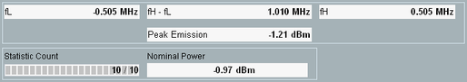
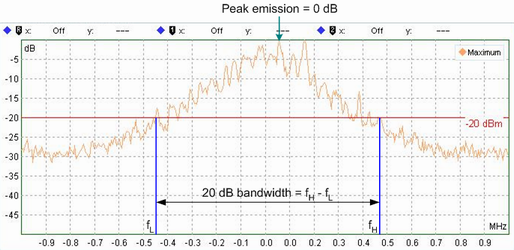

Spectrum 20 dB Bandwidth Results (BR)
The output fields in the "Spectrum 20 dB Bandwidth" view show an overview of the 20 dB bandwidth results.

Bluetooth multi-evaluation: 20 dB bandwidth results (BR)
The 20 dB bandwidth (occupied bandwidth, OBW) is the width of the frequency band around the peak of the emission where the transmit power drops by less than 20 dB. It is measured as the difference between the two frequencies fH – fL, where:
- "fH" denotes the highest frequency at which the transmit power drops 20 dB below the peak power.
- "fL" denotes the smallest frequency at which the transmit power drops 20 dB below the peak power.
The 20 dB bandwidth results are based on the "Maximum" spectral trace and obtained using a 10 kHz resolution bandwidth. A small 20 dB bandwidth means that the transmit power is focused, and hence the off-carrier emissions are small. An example is shown below.

Definition of 20 dB bandwidth
The 20 dB bandwidth output fields provide the following additional measurement-specific results:
- "Peak Emission": peak power within the maximum spectral trace (as shown in Figure "Definition of 20 dB bandwidth") .
- "Nominal Power": average burst power during the carrier-on state, measured within the "Basic Rate Filter Bandwidth". "Nominal Power" value is larger than the "Peak Emission", as it is measured using filter with larger resolution bandwidth.
Read "Spectrum 20 dB Bandwidth Measurement" to measure the 20 dB bandwidth in line with the test specification for Bluetooth wireless technology. |
For query of the results via remote control, see "Spectrum Measurement Results (BR)".